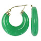
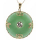
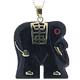
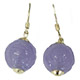
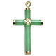
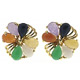
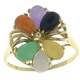
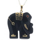

<table border="0" cellpadding="2" cellspacing="0" width="100%"> 
  <tbody><tr bgcolor="#ffffff"> 
  <td valign="top" align="center"> 
  <table><tbody><tr><td><a href="http://www.overstock.com/cgi-bin/d2.cgi?PAGE=PROFRAME&amp;PROD_ID=54035"></a></td></tr> 
  <tr><td><a href="http://www.overstock.com/cgi-bin/d2.cgi?PAGE=PROFRAME&amp;PROD_ID=54035">More Info...</a></td></tr> 
  </tbody></table></td><td valign="top"> 
  <a href="http://www.overstock.com/cgi-bin/d2.cgi?PAGE=PROFRAME&amp;PROD_ID=54035"><b>14-kt. Green Jade Hoops</b></a><br> 
  <table><tbody><tr><td valign="top"><table> 
  <tbody><tr><td align="right" nowrap="nowrap"><b>List Price:</b></td><td align="left" nowrap="nowrap"><s>$90.00</s></td></tr> 
  <tr><td align="right" nowrap="nowrap"><b>Price:</b></td><td align="left" nowrap="nowrap"><span class="bigred"><b>$46.99</b></span></td></tr> 
  <tr><td align="right" nowrap="nowrap"><b>You Save:</b></td><td align="left" nowrap="nowrap"><span class="littleorange">$43.01 (47%)</span></td></tr> 
  </tbody></table> 
  </td><td valign="top"><span class="normal">Hoops of cool green jade rest
  between 14-karat yellow gold endpieces. The hoops graduate in thickness from
  3 mm at the ends to 6 mm in the center, with approximately 29 mm overall
  diameter.<br><a href="http://www.overstock.com/cgi-bin/d2.cgi?PAGE=PROFRAME&amp;PROD_ID=54035"><span class="tiny"><b>Click here to purchase.</b></span></a></span><br> 
  <table width="100%"><tbody><tr><td align="right"><a href="http://www.overstock.com/cgi-bin/d2.cgi?PAGE=PROFRAME&amp;PROD_ID=54035"></a></td></tr></tbody></table></td></tr></tbody></table> 
  </td></tr> 
  <tr><td colspan="2" height="4"></td></tr> 
  <tr bgcolor="#dddddd"> 
  <td valign="top" align="center"> 
  <table><tbody><tr><td><a href="http://www.overstock.com/cgi-bin/d2.cgi?PAGE=PROFRAME&amp;PROD_ID=65046"></a></td></tr> 
  <tr><td><a href="http://www.overstock.com/cgi-bin/d2.cgi?PAGE=PROFRAME&amp;PROD_ID=65046">More Info...</a></td></tr> 
  </tbody></table></td><td valign="top"> 
  <a href="http://www.overstock.com/cgi-bin/d2.cgi?PAGE=PROFRAME&amp;PROD_ID=65046"><b>14-kt. Jade Doughnut Pendant</b></a><br> 
  <table><tbody><tr><td valign="top"><table> 
  <tbody><tr><td align="right" nowrap="nowrap"><b>List Price:</b></td><td align="left" nowrap="nowrap"><s>$150.00</s></td></tr> 
  <tr><td align="right" nowrap="nowrap"><b>Price:</b></td><td align="left" nowrap="nowrap"><span class="bigred"><b>$48.99</b></span></td></tr> 
  <tr><td align="right" nowrap="nowrap"><b>You Save:</b></td><td align="left" nowrap="nowrap"><span class="littleorange">$101.01 (67%)</span></td></tr> 
  </tbody></table> 
  </td><td valign="top"><span class="normal">The 25-mm disk hangs delicately
  from a 14-karat gold chain. The disk features a dramatic gold Chinese character
  in the center, accompanied by four stylized gold bees.<br><a href="http://www.overstock.com/cgi-bin/d2.cgi?PAGE=PROFRAME&amp;PROD_ID=65046"><span class="tiny"><b>Click here to purchase.</b></span></a></span><br> 
  </td></tr></tbody></table> 
  </td></tr> 
  <tr><td colspan="2" height="4"></td></tr> 
  <tr bgcolor="#ffffff"> 
  <td valign="top" align="center"> 
  <table><tbody><tr><td><a href="http://www.overstock.com/cgi-bin/d2.cgi?PAGE=PROFRAME&amp;PROD_ID=43331"></a></td></tr> 
  <tr><td><a href="http://www.overstock.com/cgi-bin/d2.cgi?PAGE=PROFRAME&amp;PROD_ID=43331">More Info...</a></td></tr> 
  </tbody></table></td><td valign="top"> 
  <a href="http://www.overstock.com/cgi-bin/d2.cgi?PAGE=PROFRAME&amp;PROD_ID=43331"><b>14-kt. Charcoal Jade and Ruby Elephant Pendant</b></a><br> 
  <table><tbody><tr><td valign="top"><table> 
  <tbody><tr><td align="right" nowrap="nowrap"><b>List Price:</b></td><td align="left" nowrap="nowrap"><s>$100.00</s></td></tr> 
  <tr><td align="right" nowrap="nowrap"><b>Price:</b></td><td align="left" nowrap="nowrap"><span class="bigred"><b>$28.99</b></span></td></tr> 
  <tr><td align="right" nowrap="nowrap"><b>You Save:</b></td><td align="left" nowrap="nowrap"><span class="littleorange">$71.01 (71%)</span></td></tr> 
  </tbody></table> 
  </td><td valign="top"><span class="normal">Carved of rich dark grey jade,
  this elephant pendant has 14-karat yellow gold applied to mark the feet,
  tusk, tail, and blanket. A 2-mm round faceted ruby in a gold bezel setting
  forms the eye. The pendant hangs from an 18-inch chain.<br><a href="http://www.overstock.com/cgi-bin/d2.cgi?PAGE=PROFRAME&amp;PROD_ID=43331"><span class="tiny"><b>Click here to purchase.</b></span></a></span><br> 
  </td></tr></tbody></table> 
  </td></tr> 
  <tr><td colspan="2" height="4"></td></tr> 
  <tr bgcolor="#dddddd"> 
  <td valign="top" align="center"> 
  <table><tbody><tr><td><a href="http://www.overstock.com/cgi-bin/d2.cgi?PAGE=PROFRAME&amp;PROD_ID=54036"></a></td></tr> 
  <tr><td><a href="http://www.overstock.com/cgi-bin/d2.cgi?PAGE=PROFRAME&amp;PROD_ID=54036">More Info...</a></td></tr> 
  </tbody></table></td><td valign="top"> 
  <a href="http://www.overstock.com/cgi-bin/d2.cgi?PAGE=PROFRAME&amp;PROD_ID=54036"><b>14-kt. Carved Lavender Jade Earrings</b></a><br> 
  <table><tbody><tr><td valign="top"><table> 
  <tbody><tr><td align="right" nowrap="nowrap"><b>List Price:</b></td><td align="left" nowrap="nowrap"><s>$80.00</s></td></tr> 
  <tr><td align="right" nowrap="nowrap"><b>Price:</b></td><td align="left" nowrap="nowrap"><span class="bigred"><b>$39.99</b></span></td></tr> 
  <tr><td align="right" nowrap="nowrap"><b>You Save:</b></td><td align="left" nowrap="nowrap"><span class="littleorange">$40.01 (50%)</span></td></tr> 
  </tbody></table> 
  </td><td valign="top"><span class="normal">Luscious 8-mm lavender jade balls, carved with intricate Asian style, dangle from a 14-karat yellow gold French hook.<br><a href="http://www.overstock.com/cgi-bin/d2.cgi?PAGE=PROFRAME&amp;PROD_ID=54036"><span class="tiny"><b>Click here to purchase.</b></span></a></span><br> 
  </td></tr></tbody></table> 
  </td></tr> 
  <tr><td colspan="2" height="4"></td></tr> 
  <tr bgcolor="#ffffff"> 
  <td valign="top" align="center"> 
  <table><tbody><tr><td><a href="http://www.overstock.com/cgi-bin/d2.cgi?PAGE=PROFRAME&amp;PROD_ID=53736"></a></td></tr> 
  <tr><td><a href="http://www.overstock.com/cgi-bin/d2.cgi?PAGE=PROFRAME&amp;PROD_ID=53736">More Info...</a></td></tr> 
  </tbody></table></td><td valign="top"> 
  <a href="http://www.overstock.com/cgi-bin/d2.cgi?PAGE=PROFRAME&amp;PROD_ID=53736"><b>14-kt. Jade Cross Pendant</b></a><br> 
  <table><tbody><tr><td valign="top"><table> 
  <tbody><tr><td align="right" nowrap="nowrap"><b>List Price:</b></td><td align="left" nowrap="nowrap"><s>$150.00</s></td></tr> 
  <tr><td align="right" nowrap="nowrap"><b>Price:</b></td><td align="left" nowrap="nowrap"><span class="bigred"><b>$49.99</b></span></td></tr> 
  <tr><td align="right" nowrap="nowrap"><b>You Save:</b></td><td align="left" nowrap="nowrap"><span class="littleorange">$100.01 (66%)</span></td></tr> 
  </tbody></table> 
  </td><td valign="top"><span class="normal">Green jade and gold create this
  beautiful cross pendant. Cylindrical bars of green jade feature caps and
  center of 14-karat yellow gold.<br><a href="http://www.overstock.com/cgi-bin/d2.cgi?PAGE=PROFRAME&amp;PROD_ID=53736"><span class="tiny"><b>Click here to purchase.</b></span></a></span><br> 
  <table width="100%"><tbody><tr><td align="right"><a href="http://www.overstock.com/cgi-bin/d2.cgi?PAGE=PROFRAME&amp;PROD_ID=53736"></a></td></tr></tbody></table></td></tr></tbody></table> 
  </td></tr> 
  <tr><td colspan="2" height="4"></td></tr> 
  <tr bgcolor="#dddddd"> 
  <td valign="top" align="center"> 
  <table><tbody><tr><td><a href="http://www.overstock.com/cgi-bin/d2.cgi?PAGE=PROFRAME&amp;PROD_ID=43326"></a></td></tr> 
  <tr><td><a href="http://www.overstock.com/cgi-bin/d2.cgi?PAGE=PROFRAME&amp;PROD_ID=43326">More Info...</a></td></tr> 
  </tbody></table></td><td valign="top"> 
  <a href="http://www.overstock.com/cgi-bin/d2.cgi?PAGE=PROFRAME&amp;PROD_ID=43326"><b>14-kt. Multicolored Jade Earrings</b></a><br> 
  <table><tbody><tr><td valign="top"><table> 
  <tbody><tr><td align="right" nowrap="nowrap"><b>List Price:</b></td><td align="left" nowrap="nowrap"><s>$375.00</s></td></tr> 
  <tr><td align="right" nowrap="nowrap"><b>Price:</b></td><td align="left" nowrap="nowrap"><span class="bigred"><b>$99.99</b></span></td></tr> 
  <tr><td align="right" nowrap="nowrap"><b>You Save:</b></td><td align="left" nowrap="nowrap"><span class="littleorange">$275.01 (73%)</span></td></tr> 
  </tbody></table> 
  </td><td valign="top"><span class="normal">A delicate wrapping of 14-karat
  yellow gold wire holds six 6 x 4 pear shapes of jade in various shades: brilliant
  green, orange, lavender, black, pale yellow, and white. The post earrings
  have butterfly backs.<br><a href="http://www.overstock.com/cgi-bin/d2.cgi?PAGE=PROFRAME&amp;PROD_ID=43326"><span class="tiny"><b>Click here to purchase.</b></span></a></span><br> 
  </td></tr></tbody></table> 
  </td></tr> 
  <tr><td colspan="2" height="4"></td></tr> 
  <tr bgcolor="#ffffff"> 
  <td valign="top" align="center"> 
  <table><tbody><tr><td><a href="http://www.overstock.com/cgi-bin/d2.cgi?PAGE=PROFRAME&amp;PROD_ID=43323"></a></td></tr> 
  <tr><td><a href="http://www.overstock.com/cgi-bin/d2.cgi?PAGE=PROFRAME&amp;PROD_ID=43323">More Info...</a></td></tr> 
  </tbody></table></td><td valign="top"> 
  <a href="http://www.overstock.com/cgi-bin/d2.cgi?PAGE=PROFRAME&amp;PROD_ID=43323"><b>14-kt. Multicolored Jade Ring</b></a><br> 
  <table><tbody><tr><td valign="top"><table> 
  <tbody><tr><td align="right" nowrap="nowrap"><b>List Price:</b></td><td align="left" nowrap="nowrap"><s>$250.00</s></td></tr> 
  <tr><td align="right" nowrap="nowrap"><b>Price:</b></td><td align="left" nowrap="nowrap"><span class="bigred"><b>$56.99</b></span></td></tr> 
  <tr><td align="right" nowrap="nowrap"><b>You Save:</b></td><td align="left" nowrap="nowrap"><span class="littleorange">$193.01 (77%)</span></td></tr> 
  </tbody></table> 
  </td><td valign="top"><span class="normal">A delicate wrapping of 14-karat
  yellow gold wire holds six 6 x 4 ovals of jade in various shades: brilliant
  green, orange, lavender, black, pale yellow, and white. A narrow gold band
  divides to support the setting.<br><a href="http://www.overstock.com/cgi-bin/d2.cgi?PAGE=PROFRAME&amp;PROD_ID=43323"><span class="tiny"><b>Click here to purchase.</b></span></a></span><br> 
  </td></tr></tbody></table> 
  </td></tr> 
  <tr><td colspan="2" height="4"></td></tr> 
  <tr bgcolor="#dddddd"> 
  <td valign="top" align="center"> 
  <table><tbody><tr><td><a href="http://www.overstock.com/cgi-bin/d2.cgi?PAGE=PROFRAME&amp;PROD_ID=43334"></a></td></tr> 
  <tr><td><a href="http://www.overstock.com/cgi-bin/d2.cgi?PAGE=PROFRAME&amp;PROD_ID=43334">More Info...</a></td></tr> 
  </tbody></table></td><td valign="top"> 
  <a href="http://www.overstock.com/cgi-bin/d2.cgi?PAGE=PROFRAME&amp;PROD_ID=43334"><b>14-kt. Onyx and Ruby Elephant Pendant</b></a><br> 
  <table><tbody><tr><td valign="top"><table> 
  <tbody><tr><td align="right" nowrap="nowrap"><b>List Price:</b></td><td align="left" nowrap="nowrap"><s>$100.00</s></td></tr> 
  <tr><td align="right" nowrap="nowrap"><b>Price:</b></td><td align="left" nowrap="nowrap"><span class="bigred"><b>$35.99</b></span></td></tr> 
  <tr><td align="right" nowrap="nowrap"><b>You Save:</b></td><td align="left" nowrap="nowrap"><span class="littleorange">$64.01 (64%)</span></td></tr> 
  </tbody></table> 
  </td><td valign="top"><span class="normal">Carved of rich black onyx, this
  elephant pendant has 14-karat yellow gold applied to mark the feet, tusk,
  tail, and blanket. A 2-mm round faceted ruby in a gold bezel setting forms
  the eye. The pendant hangs from an 18-inch chain.<br><a href="http://www.overstock.com/cgi-bin/d2.cgi?PAGE=PROFRAME&amp;PROD_ID=43334"><span class="tiny"><b>Click here to purchase.</b></span></a></span><br> 
  </td></tr></tbody></table> 
  </td></tr> 
  <tr><td colspan="2" height="4"></td></tr> 
  </tbody></table>